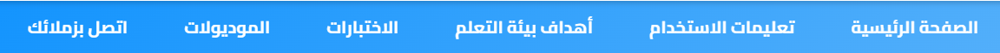
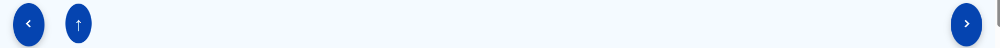
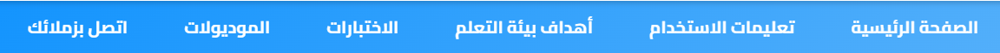
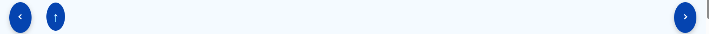

تعليمات استخدام بيئة التعلم الإلكتروني التشاركي
✦ عزيزي الطالب، هذا المحتوي التعليمي تم تصميمه من أجل تنمية معارفك ومهاراتك اللازمة لإنتاج مشروعات التخرج، لذا يرجي منك اتباع التعليمات الآتية قبل البدء في دراسة المحتوى التعليمي لتحقيق الأهداف المنشودة من البيئة التعليمية:
- بعد الإنتهاء من الإطلاع علي تعليمات استخدام بيئة التعلم الإلكتروني التشاركي قم بتسجيل الدخول .
بعد تسجيل الدخول يمكنك:
- الإجابة عن الاختبار القبلي الذي يقيس المهارات المعرفية المتعلقة بمشروعات التخرج.
- دراسة الموديولات التعليمية الست بالترتيب.
- الإجابة عن الاختبار القبلي لكل موديول تعليمي .
-
تنفيذ الأنشطة التفاعلية داخل كل موديول، وأرسلها عبر البريد الإلكتروني التالي:
maysabla5557@gmail.com 📧
أو بالطريقة الموضحة لك داخل كل نشاط تعليمي.
ويظهر بهذا الشكل في كل موديول:

- الإجابة عن الاختبار البعدي لكل موديول تعليمي .
- تسليم مشروع التخرج قبل الموعد النهائي المحدد.
- انقر على زر "اتصل بنا" للاستفسار أو الاستعلام عند مواجهتك لأي مشكلة.
* تعرف علي شريط التنقل داخل بيئة التعلم الإلكتروني التشاركي كما بالشكل التالي:

🏠الصفحة الرئيسية: بداية رحلتك التعليمية، تتضمن التعريف ببيئة التعلم التشاركي.
📝 تعليمات الاستخدام: توضح لك كيف تتفاعل مع بيئة التعلم التشاركي .
🎯 أهداف بيئة التعلم: توضح لك ما ستتعلمه وتحققه من خلال المحتوي التعليمي.
📝 الاختبارات: تساعدك في قياس مدى فهمك للمحتوي التعليمي .
📚 موديولات البيئة: المحتوى الأساسي للدراسة، مقسم إلى ست وحدات تعليمية .
📞 اتصل بنا: تتيح لك التواصل عند وجود أي مشكلة و الاستفسار من قبل المشرف أو أقرانك.
* تعرف علي أزرار التنقل الموجودة أسفل صفحات بيئة التعلم التشاركي كما تظهر بالشكل التالي:

الصفحة السابقة
الصفحة التالية
↑
التنقل لأعلي الصفحة
* تعرف علي واجهة الموديولات الست في بيئة التعلم التشاركي:
في بدية كل موديول تعليمي يوجد فيديو تعريفي للموديول، ويمكنك مشاهدته من خلال الضغط علي الأفاتار الموجود أمامك ويكون بهذا الشكل:

يظهر محتوي كل موديول تعليمي في أربعة أجزاء : الهدف العام، والأهداف الإجرائية ، والمحتوي والأنشطة ، والإختبار البعدي لكل موديول ،
كما هو موضح بالشكل التالي ويمكنك الضغط علي كل مستطيل ليظهر محتواه .
 مع تمنياتي بالتوفيق والنجاح الدائم
مع تمنياتي بالتوفيق والنجاح الدائم

بعد تسجيل الدخول يمكنك:
* تعرف علي شريط التنقل داخل بيئة التعلم الإلكتروني التشاركي كما بالشكل التالي: 
-
🏠الصفحة الرئيسية: بداية رحلتك التعليمية، تتضمن التعريف ببيئة التعلم التشاركي.
📝 تعليمات الاستخدام: توضح لك كيف تتفاعل مع بيئة التعلم التشاركي .
🎯 أهداف بيئة التعلم: توضح لك ما ستتعلمه وتحققه من خلال المحتوي التعليمي.
📝 الاختبارات: تساعدك في قياس مدى فهمك للمحتوي التعليمي .
📚 موديولات البيئة: المحتوى الأساسي للدراسة، مقسم إلى ست وحدات تعليمية .
📞 اتصل بنا: تتيح لك التواصل عند وجود أي مشكلة و الاستفسار من قبل المشرف أو أقرانك.
* تعرف علي أزرار التنقل الموجودة أسفل صفحات بيئة التعلم التشاركي كما تظهر بالشكل التالي: 
-
الصفحة السابقة
الصفحة التالية
↑ التنقل لأعلي الصفحة
* تعرف علي واجهة الموديولات الست في بيئة التعلم التشاركي:
-
في بدية كل موديول تعليمي يوجد فيديو تعريفي للموديول، ويمكنك مشاهدته من خلال الضغط علي الأفاتار الموجود أمامك ويكون بهذا الشكل:
-
يظهر محتوي كل موديول تعليمي في أربعة أجزاء : الهدف العام، والأهداف الإجرائية ، والمحتوي والأنشطة ، والإختبار البعدي لكل موديول ،
كما هو موضح بالشكل التالي ويمكنك الضغط علي كل مستطيل ليظهر محتواه .
مع تمنياتي بالتوفيق والنجاح الدائم
✅ سجّل دخولك لبيئة التعلم الإلكتروني التشاركي.
تسجيل الدخول